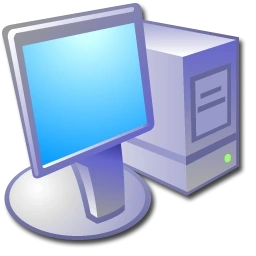

Administrator
Internet
Internet Explorer
E-mail
Outlook Express
MSN Explorer
Windows Media Player
Windows Movie Maker
Tour Windows XP
Files and Settings Transfer Wizard
Notepad
All Programs
My Documents
My Pictures
My Music
My Computer
My Network Places
Control Panel
Administrative Tools
Connect To
Help and Support
Search
Run...
Log Off
Turn Off Computer
Show Desktop
My Documents
Internet Explorer
Outlook Express
MSN Explorer
Calculator
Paint
Volume Control: 72%
Connection: Online
USB Connected

My Computer
Recycle Bin
My Documents
Internet Explorer
MSN Messenger